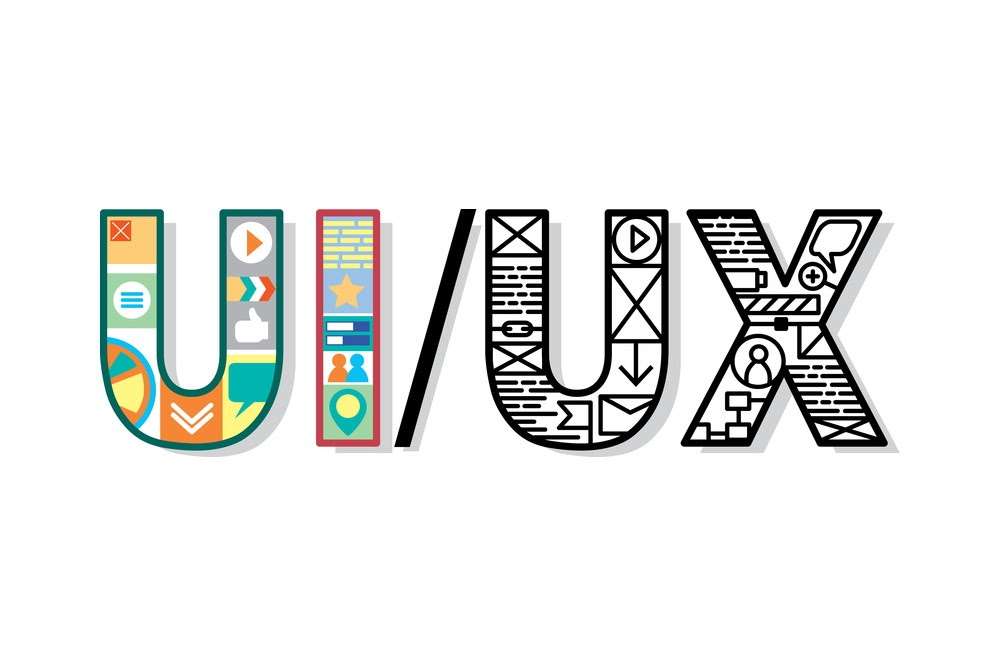

my
future
career
ฉันคิดว่าการออกแบบก็เหมือนกับ "ไม้กายสิทธิ์" หากบริการหรือผลิตภัณฑ์เป็นวิธีแก้ปัญหา
สำหรับปัญหาบทบาทของการออกแบบจะเป็นตัวกลางให้
เรามุ่งมั่นทุกวันเพื่อสร้าง " ไม้กายสิทธิ์ "ที่เหมาะกับผู้ใช้งาน
เทคโนโลยีมีอำนาจในการเปลี่ยนแปลงชีวิตของโลกและของแต่ละบุคคล
ฉันต้องการเป็นคนที่ทันต่อเทคโนโลยีล่าสุดและตอบสนอง
ต่อการเปลี่ยนแปลง ฉันคิดว่าเป็นภารกิจของนักออกแบบในการ
ส่งเสริมนวัตกรรม